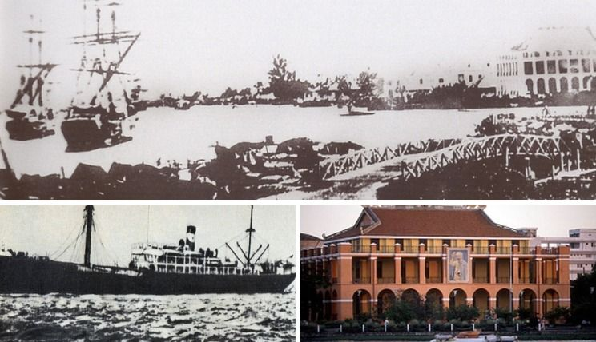
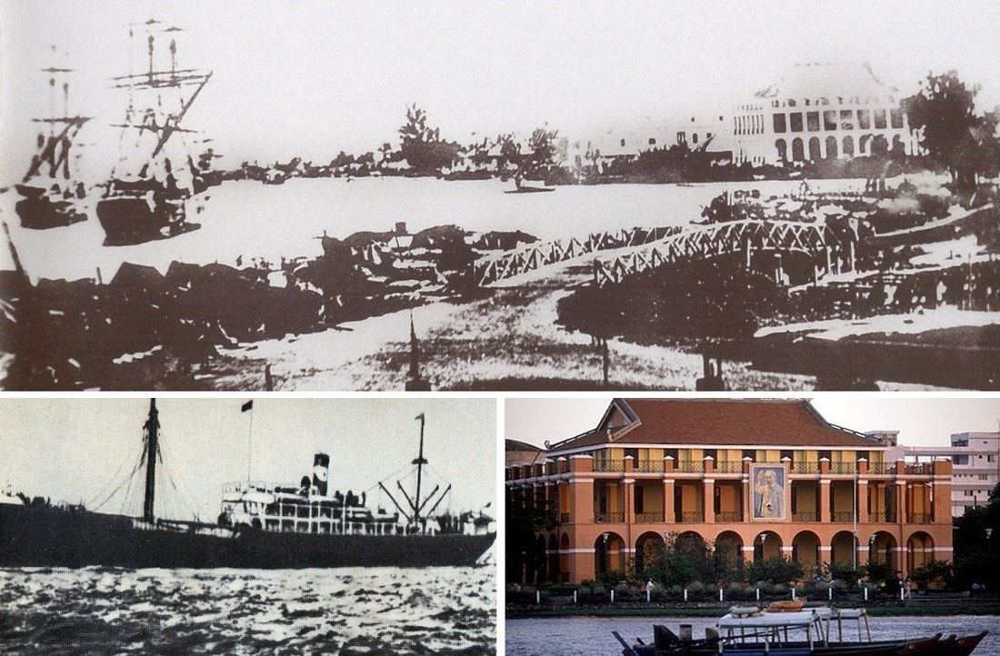
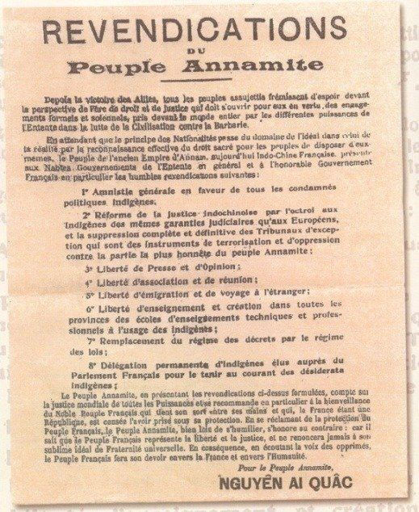
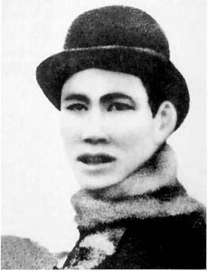
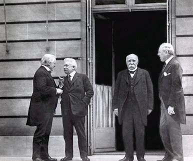
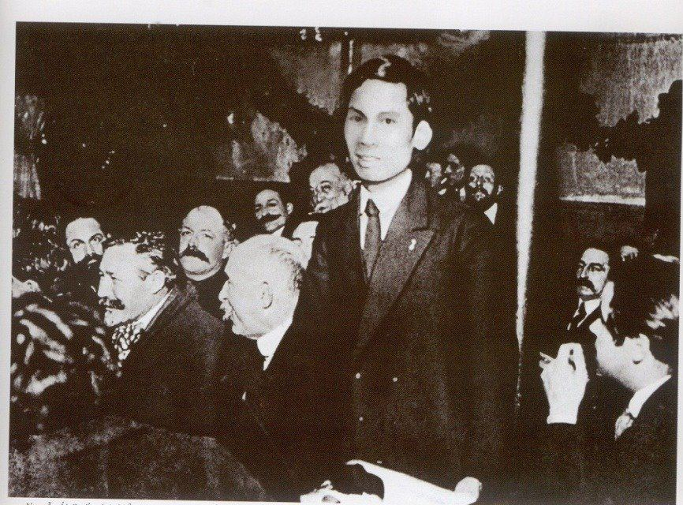
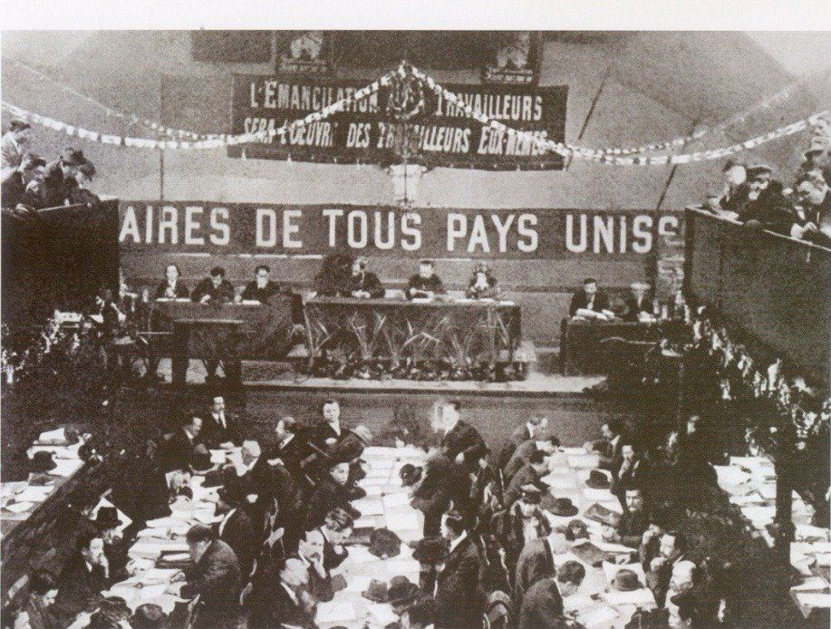

5/6/1911 rời bến Nhà Rồng; 7/1920 đọc Luận cương của Lênin; 12/1920 dự Đại hội Tua.
Nhà RồngPa-riTua

Bến Nhà Rồng – nơi Người ra đi tìm đường cứu nước
Tên gọiNguyễn Tất Thành → Nguyễn Ái Quốc
13ảnh tư liệu
1phim tư liệu
4trích dẫn
5câu trắc nghiệm
Tổng quan thời kỳ
5/6/1911: rời Bến Nhà Rồng trên tàu Amiral Latouche-Tréville
1911 – 1912: qua nhiều nước châu Âu, châu Phi, châu Mỹ
1912 – 1913: sống, làm việc ở Mỹ
1913 – 1917: sống, làm việc ở Anh
Ở đâu chủ nghĩa đế quốc cũng tàn bạo, người lao động cũng bị áp bức
Chủ nghĩa đế quốc là kẻ thù chung của các dân tộc thuộc địa
Cách mạng tư sản Mỹ, Pháp là cách mạng “chưa đến nơi”
Cuối 1917: trở lại Pháp, hoạt động trong phong trào công nhân
1919: gia nhập Đảng Xã hội Pháp
Tham gia Hội những người Việt Nam yêu nước tại Pa-ri
Thời kỳ từ 1911 đến 1920Nhà Rồng → Pa-ri → TuaNguyễn Tất Thành Nguyễn Ái Quốc
18/6/1919: gửi Bản yêu sách của nhân dân An Nam tới Hội nghị Véc-xây
Ký tên Nguyễn Ái Quốc
Đòi các quyền tự do, dân chủ tối thiểu cho nhân dân Việt Nam
Bài học: muốn giải phóng, các dân tộc phải dựa vào sức mình
7/1920: đọc Sơ thảo lần thứ nhất những luận cương về vấn đề dân tộc và thuộc địa của Lênin
Đăng trên báo Nhân đạo (L’Humanité), 16 – 17/7/1920
Tìm thấy con đường giải phóng dân tộc
25 – 30/12/1920: dự Đại hội Đảng Xã hội Pháp tại Tua
Bỏ phiếu tán thành gia nhập Quốc tế Cộng sản
Tham gia sáng lập Đảng Cộng sản Pháp
Từ người yêu nước trở thành người cộng sản
Các mốc sự kiện
rời Bến Nhà Rồng trên tàu Amiral Latouche-Tréville
qua nhiều nước châu Âu, châu Phi, châu Mỹ
sống, làm việc ở Mỹ
sống, làm việc ở Anh
trở lại Pháp, hoạt động trong phong trào công nhân
gia nhập Đảng Xã hội Pháp
gửi Bản yêu sách của nhân dân An Nam tới Hội nghị Véc-xây
đọc Sơ thảo lần thứ nhất những luận cương về vấn đề dân tộc và thuộc địa của Lênin
dự Đại hội Đảng Xã hội Pháp tại Tua
Ảnh tư liệu
1
Ra đi tìm đường cứu nước (5/6/1911)

Bến Nhà Rồng – nơi Người ra đi tìm đường cứu nướcNgày 5/6/1911, người thanh niên Nguyễn Tất Thành rời Tổ quốc sang phương Tây, làm phụ bếp trên tàu buôn Pháp Đô đốc Latouche-Tréville với tên gọi Văn Ba. Ảnh trên: Bến cảng Nhà Rồng đầu thế kỷ XX. Ảnh dưới, bên trái: tàu Đô đốc Latouche-Tréville; bên phải: Bến Nhà Rồng ngày nay – Bảo tàng Hồ Chí Minh, Chi nhánh Thành phố Hồ Chí Minh.
2
Hành trình qua nhiều nước
Pháp · 1911Đặt chân lên đất Pháp, tìm hiểu “Tự do – Bình đẳng – Bác ái”.
Mỹ · 1912 – 1913Tìm hiểu cách mạng Mỹ và Tuyên ngôn độc lập năm 1776.
Anh · 1913 – 1917Vừa lao động kiếm sống, vừa học tập, quan sát đời sống người lao động.
Liên Xô · 1923 – 1924Học tập, nghiên cứu chủ nghĩa Mác – Lênin, dự Đại hội V Quốc tế Cộng sản.
Trung Quốc · 1924 – 1930Thành lập Hội Việt Nam Cách mạng Thanh niên, chuẩn bị thành lập Đảng.
Nhận thức rút ra: “Ở đâu nhân dân lao động cũng là bạn, ở đâu chủ nghĩa đế quốc cũng là thù.” Hai chặng Liên Xô và Trung Quốc thuộc thời kỳ 1921 – 1930, được đưa vào để thấy trọn hành trình của Người. (Ảnh công trình tiêu biểu là hình ảnh biểu trưng cho các nước Người từng đến.)
3
Bản yêu sách 8 điểm (1919)

Bản Yêu sách của nhân dân An Nam (18/6/1919)Bản yêu sách 8 điểm ký tên Nguyễn Ái Quốc, gửi tới Hội nghị Véc-xây, đòi các quyền tự do, dân chủ, bình đẳng cho nhân dân Việt Nam.

Nguyễn Ái Quốc thời kỳ hoạt động ở PhápTừ năm 1919, Người lấy tên Nguyễn Ái Quốc, hoạt động trong Hội những người Việt Nam yêu nước tại Pháp.

Hội nghị Véc-xây (1919)Lãnh đạo bốn nước Anh, Ý, Pháp, Mỹ tại hội nghị của các nước thắng trận sau Chiến tranh thế giới thứ nhất. Bản yêu sách không được hội nghị chấp nhận.
Bài học: muốn được giải phóng, các dân tộc chỉ có thể trông cậy vào sức mạnh của chính mình.
4
Gặp Luận cương của Lênin (7/1920)
V.I. Lênin (1870 – 1924)Lãnh tụ Cách mạng Tháng Mười Nga, tác giả Sơ thảo lần thứ nhất những luận cương về vấn đề dân tộc và vấn đề thuộc địa.
Sơ thảo lần thứ nhất những luận cương về vấn đề dân tộc và vấn đề thuộc địaVăn kiện được đăng trên báo Nhân đạo (L’Humanité) số ra ngày 16 và 17/7/1920. Đọc Luận cương, Nguyễn Ái Quốc tìm thấy con đường giải phóng cho dân tộc.
V.I. Lênin diễn thuyết trước quần chúngLênin – người lãnh đạo Cách mạng Tháng Mười Nga năm 1917, cuộc cách mạng có ảnh hưởng lớn đến sự lựa chọn con đường cứu nước của Nguyễn Ái Quốc.
5
Đại hội Tua (12/1920)

Nguyễn Ái Quốc phát biểu tại Đại hội TuaNgười biểu quyết tán thành Quốc tế III, trở thành một trong những người tham gia sáng lập Đảng Cộng sản Pháp.

Toàn cảnh Đại hội Tua (25 – 30/12/1920)Đại hội lần thứ 18 của Đảng Xã hội Pháp, họp tại thành phố Tua.
Phim tư liệu
Phim tư liệu đang được cập nhật
Trích dẫn, tác phẩm
Trích dẫn · Thời kỳ từ 1911 đến 1920
Bấm vào trích dẫn hoặc ảnh để phóng to
01Những ngày đầu ra điLơ Havơrơ, cuối 1911 – đầu 1912
“Tôi là thanh niên, tôi khỏe, tôi chịu được khổ”
Khi Anh nhận làm bồi tàu đi vòng quanh châu Phi – ý chí, nghị lực của người thanh niên lúc ra đi.
“
Anh không nên nói như thế. Tôi là thanh niên, tôi khỏe, tôi chịu được khổ. Và tôi muốn đến xem các nước.
02Những ngày đầu ra đi7/1911
Những nhận xét đầu tiên ở nước Pháp
Do ông Mai, bạn làm trên tàu Amiran Latusơ Tơrêvin, kể lại – lần đầu Người thấy “Tự do, Bình đẳng, Bác ái” khác xa thực tế.
“
“Ơ! Ở Pháp cũng có người nghèo như bên ta!” – “Tại sao người Pháp không ‘khai hoá’ đồng bào của họ trước khi đi ‘khai hoá’ chúng ta?”
03
“
Hỡi đồng bào bị đọa đày đau khổ! Đây là cái cần thiết cho chúng ta, đây là con đường giải phóng chúng ta!
04
“
Muốn cứu nước và giải phóng dân tộc không có con đường nào khác con đường cách mạng vô sản.